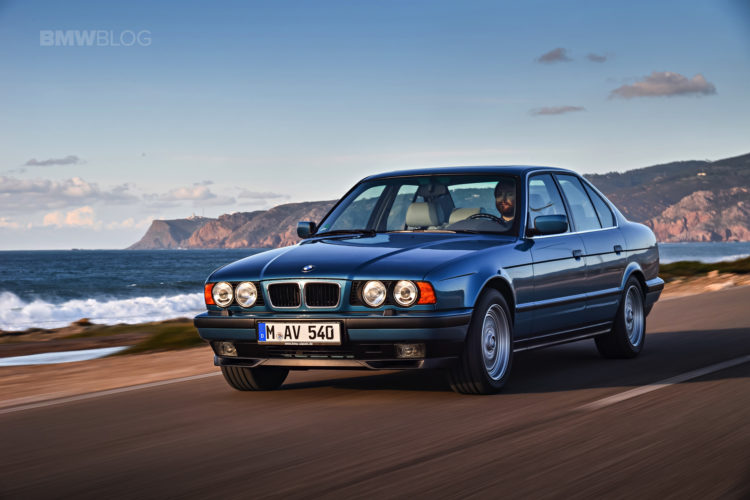

| The BMW E34 is the third generation of the BMW 5 Series, which was produced from the 2nd of November 1987 until June 1996. It was launched in the sedan body style, with the range expanded in 1990 to include the "Touring" wagon (estate) body style. The E34 was replaced by the E39 in December 1995, although E34 Touring models remained in production until June 1996. The E34 was the first 5 Series to be available with the wagon body style, the 525iX was the first 5 Series with all-wheel drive and V8 engines were also first available in a 5 Series during the E34 generation. It also saw the introduction of stability control (ASC), traction control (ASC+T) a 6-speed manual transmission and adjustable damping (EDC) to the 5 Series range. There was an unusually large range of engines fitted over its lifetime, as nine different engine families were used. These consisted of 4-cylinder, straight-six and V8 engines. The E34 M5 is powered by the S38 straight-six engine and was produced in sedan and wagon body styles. |  |
| Development ran from July 1981 to early 1987, with the initial design proposal penned by Ercole Spada in 1982. Under the guidance of chief designer Claus Luthe, BMW based much of the design on the E32 7 Series. Following Spada's departure from BMW and styling approval in 1983, J Mays finalized the design for production in mid-1985. In December 1987, the E34 sedan was unveiled to global press. Special attention was paid to aerodynamics, with the E34 having a drag coefficient of 0.30. Production of the E34 commenced on November 2, 1987 for the 535i, with 535i market launch being in January 1988 and other variants following a staggered launch. |